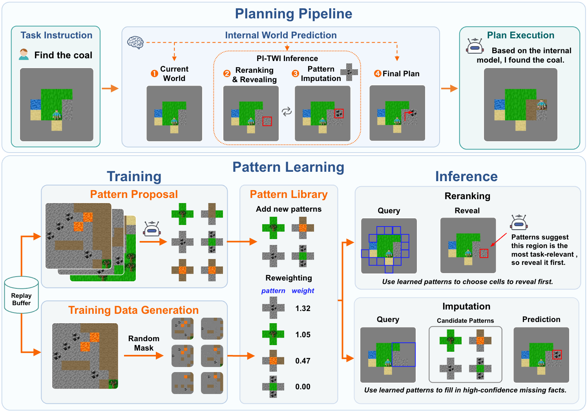

Planning from raw visual input remains a significant challenge for current Vision-Language Models (VLMs), when the complexity of input is beyond their one-step perception capability. Motivated by recent advances in Thinking with Images (TWI), a reasonable solution is to decompose the perception process into simpler steps by iteratively acquiring and incorporating local visual evidence.However, even though current VLMs are well-trained in general TWI ability, their perceptual bottleneck in the planning domain remains. To tackle this challenge, we formulate TWI as a tool to gradually build and reflect an accurate internal world model. We find that the resulting training-free planning strategy enables VLMs to solve tasks that are far beyond their initial capabilities, at the cost that too many TWI operations would significantly increase the computational overhead.To further improve efficiency, we propose Pattern Inference, a novel TWI strategy enabling VLMs to actively recognize known visual patterns in new tasks and directly infer local world model structures. To obtain these patterns, we propose Pattern Induction, an online inductive learning strategy treating visual patterns as composite and reusable experts, which are autonomously discovered and optimized from experience.Experimental evaluations in FrozenLake, Crafter, and CubeBench domains show that our approaches achieve a desirable balance between accuracy and efficiency.
To break the perceptual limitation of VLMs in visual planning, we formulate Thinking with Images (TWI) as a tool of constructing a planner-sufficient symbolic world model from visual evidence. For reducing the cost of world model construction, we introduce Pattern Inference, a novel TWI strategy enabling VLMs to actively recognize known visual patterns in planning tasks and directly infer local world model structures. To obtain these composite and reusable patterns from learning, we propose Pattern Induction, an online inductive learning method for building the pattern library from experience. Since not all induced patterns are equally useful or correct, we propose Pattern Reweighting, a self-supervised gradient-based weight optimization mechanism that reweights induced patterns using past trajectories. We name this framework PI-TWI, short for Pattern-Induced Thinking with Images.
